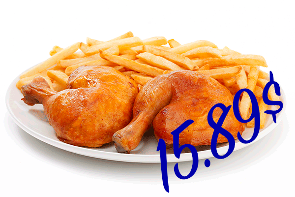
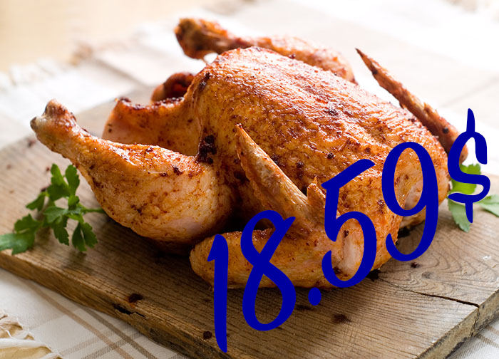
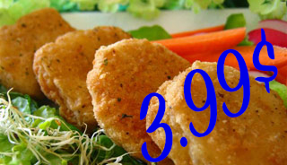

PROMOTIONS |
||
|---|---|---|
|  |  |  |
Bienvenue chez Coq Coq Cadet
Qui somme-nous? Chez Coq Coq Cadet, nous sommes une famille dont l'unique but est d'offrir les meilleurs petits plats à bases de volaille à tout les amateurs et connaisseurs de poulet. Que ce sot pour servir une famille affamée, un étudiant endêté ou un gourmet blasé, chez Coq Coq Cadet, nous nous engageons à servir la crême de la crême du poulet, élevé ici-même chez nos agriculteur locaux du Québec. Alors venez vous assoir à la table du colonel Chicken et laissez vous tenter par les délicieuses options de notre menu.